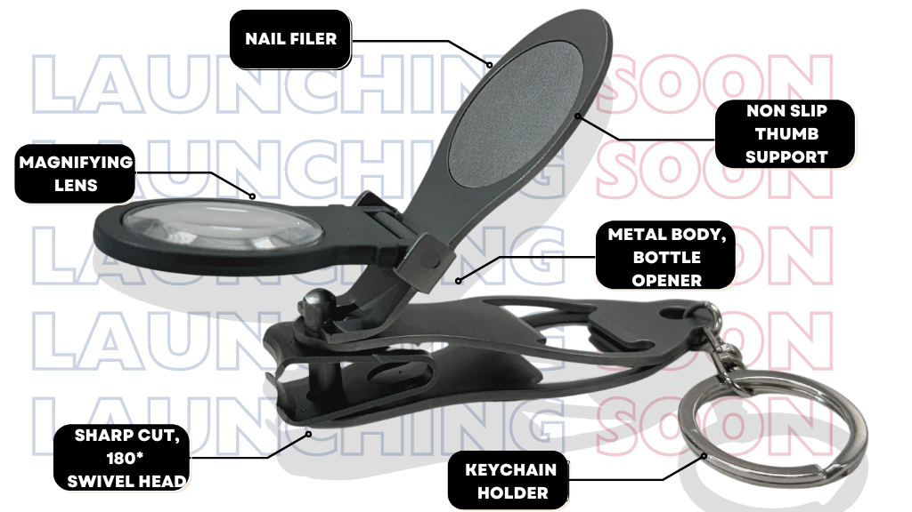
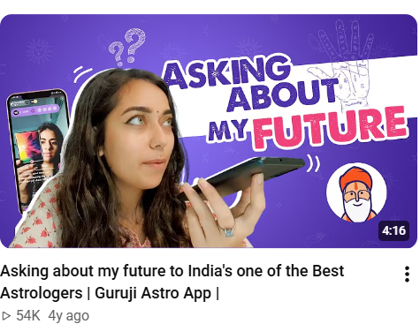
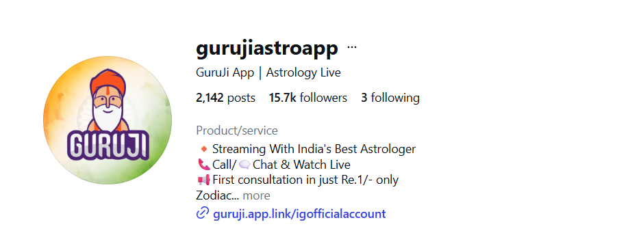
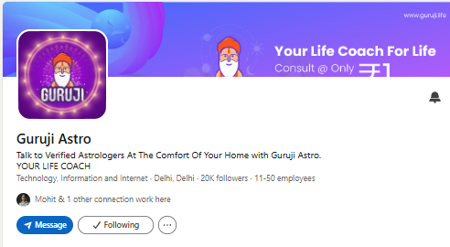
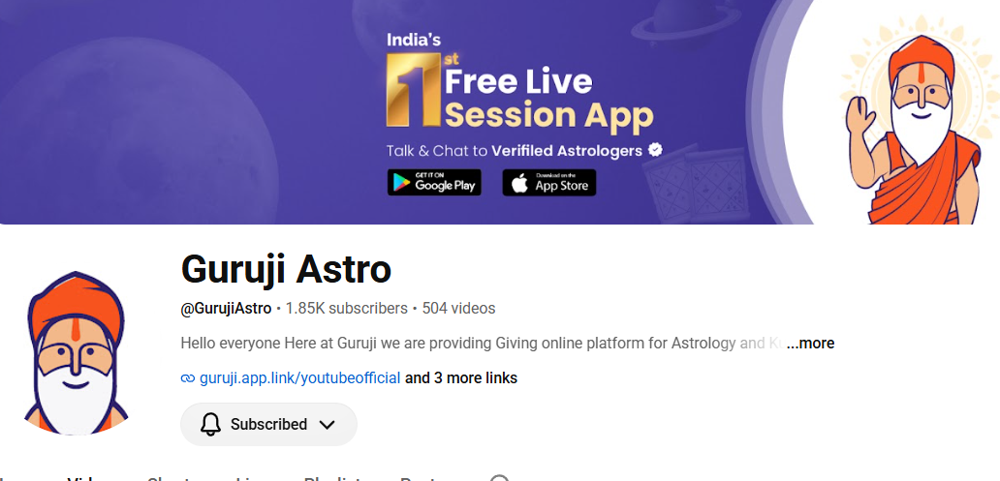

CANADA-FIRST · NORTH AMERICAN MARKET · SOCIAL STRATEGY
SANAT
SINGH
Brand, Content & Social Media Strategist
With experience across Canada and India, I build audience-first social stories for Canadian and North American brands — from B2B technology and financial services to product launches and campaigns.
1.5M+Ksolves LinkedIn impressions
74.5%organic share of impressions
7,277new followers in one year
2,000+MagniClipper pre-launch sign-ups
Ksolves analytics: 27 Sep 2025–26 Sep 2026 · Sign-ups are leads, not crowdfunding backers.
SELECTED WORK / 01—05
Featured projects.
Press play.
A Canada-first portfolio with a North American market perspective and experience across India. The Pharmassist leads as case study 01, followed by Ksolves and the rest of the portfolio.

01 · FLAGSHIP · WELLNESSThe
Pharmassist.
Pharmassist.
The PharmassistBrand · Content · Growth
Connecting pharmacist-led content, audience and acquisition.

02 · B2B · AI-FIRSTAI First.
Always.
Always.
Ksolves2025—26
Turning a new brand position into a consistent LinkedIn story.

03 · CANADIAN PRODUCT · PRE-LAUNCHMake the
first move.
first move.
MagniClipperSapsol × CGX
Pre-launch marketing that generated 2,000+ sign-ups.
04 · INDIA · AUDIENCE · STORYKnow who
you're for.
you're for.
Knauf IndiaTeam project
Human, bilingual product communication shaped by audience.

05 · VIDEO · COMMUNITY500 to
2,000.
2,000.
Guruji Astro2022—23
YouTube growth through audience-focused content strategy.
CANADIAN EXPERIENCE · MORE BRANDS, MORE CONTEXTS
Sapsol Technologies · CanadaCGX Medical · CanadaMLC College · CanadaSTEM Montessori Academy of CanadaHCLTech · ORMKohinoor Indian RumSenior ShieldSerene Communities

CASE 01 · FLAGSHIP CASE STUDY · BRAND BUILDING
The Pharmassist:
Building a wellness brand through content, audience and acquisition.
A pharmacist-led brand combining educational content, founder-led communication and digital marketing to connect audiences with health and wellness products.
AT A GLANCE · BRAND ACCOUNT SNAPSHOTS
427KInstagram followers
Brand account
Brand account
398KInstagram followers
Founder account
Founder account
478KYouTube subscribers
14.69MYouTube lifetime views
224YouTube videos shown
in supplied screenshot
in supplied screenshot
Current observed profile figures supplied for this case study; the capture date should be added when confirmed. The two Instagram accounts are separate profile counts, not a deduplicated audience. These figures describe the brand’s presence and are not attributed to Sanat’s tenure.
THE BRAND
Pharmacist-led communication, a founder people recognize, and a direct-to-consumer product range.
The Pharmassist presents itself as a pharmacist-led wellness brand. Its website pairs founder-led communication with educational content and a direct-to-consumer store spanning hair, weight management, wellness, energy and vitality products. That gives the brand a natural bridge from learning and trust to product discovery and purchase.
Product categories and founder details are drawn from the brand website. Brand statements about product benefits remain brand claims; this case study does not add medical efficacy or regulatory claims.
THE STRATEGY
Document the decisions that connected content to commercial intent.
The strategy section is structured for the actual campaign approach. Add the confirmed decisions and supporting evidence before presenting any of these as work completed.
CONTENT & EXECUTION
Real brand and product visuals, with channel examples linked to their source.


INSTAGRAM · BRAND ACCOUNTOpen The Pharmassist ↗Official brand profile and content source.
INSTAGRAM · FOUNDER ACCOUNTOpen Manish Arora ↗Founder-led content and communication.
YOUTUBE · OFFICIAL CHANNELVisit The Pharmassist on YouTube ↗Channel link only; no video is embedded on this page.
The product and founder imagery is served from The Pharmassist’s official website. Add actual campaign creatives and Instagram post links to distinguish work produced during your involvement from current brand content.
LEAD GENERATION & BUSINESS IMPACT
Make the commercial result visible—with the numbers and attribution behind it.
Lead generation is a core part of this case study. The fields below are intentionally left open until you provide verified campaign data.
Leads generated[Add verified figure]
Lead-generation period[Add dates]
Campaign or channel[Add source]
Cost per lead[Add verified CPL or N/A]
Lead quality / conversion[Add qualified-lead or sale outcome]
No lead volume, cost, conversion, revenue or campaign dates are claimed until the source evidence is added. Keep the reporting window and channel attribution beside each result.
MY CONTRIBUTION
Scope and ownership, ready for your evidence.
FOUNDER TESTIMONIAL
In Manish Arora’s words.
[Add an approved testimonial from Manish Arora.]Manish Arora · Founder, The Pharmassist
THE TAKEAWAY
Content earns attention. Audience growth gives it scale. Lead generation shows how that attention can move toward business impact.
Visit The Pharmassist ↗CASE 02 · B2B LINKEDIN · BRAND REPOSITIONING
Ksolves:
a content engine
for a new era.
Helped translate Ksolves’ shift from “Emerging Ahead Always” to “AI First. Always.” into a consistent LinkedIn-first story connecting technology expertise with the people and leadership behind it.
The challenge · The work
Make the AI-first positioning part of everyday communication, not only a corporate headline. Planned content across technology, case studies, PDF posts, carousels, video, webinars, events and people-led stories.
- Contributed to rebrand discussions, social activation, content direction and visual-direction decisions.
- The design team created the final visual identity system; the broader repositioning was cross-functional.
- Named the Enabling Series, a senior-leadership video property within the broader Enabling communication.
- Developed executive and BFSI thought leadership with four senior leaders.
The impact
Page analytics reflect a sustained content and distribution system, not a single viral campaign.
1,505,124TOTAL IMPRESSIONS
1,121,252ORGANIC · 74.5%
7,277NEW FOLLOWERS
17.1%ENGAGEMENT RATE
Also: 383,872 sponsored impressions · 146,685 page views · 54,176 unique visitors · 13,024 reactions · 319 posts · +87.9% engagement vs competitors. Period: 27 Sep 2025–26 Sep 2026.
CASE 03 · CANADIAN PRODUCT LAUNCH · SAPSOL × CGX MEDICAL
Build interest
before launch day.
Supported pre-launch positioning and crowdfunding preparation for a consumer product with a swivel head, magnifying lens, wide grip and titanium body.
The work
- Helped redesign the product website and developed the Indiegogo campaign page.
- Developed a Kickstarter page; that campaign did not go live.
- Supported product positioning and pre-launch digital strategy.
- Ran Meta campaigns to the website sign-up funnel.
The impact
2,000+PRE-LAUNCH WEBSITE SIGN-UPS
People expressing purchase interest before the crowdfunding launch.
This figure is pre-launch website leads/sign-ups, not crowdfunding backers.
Know your
audience.
audience.
CASE 04 · INDIA · AUDIENCE-LED CONTENT · BUFFALO SOLDIERS
Knauf India:
make product stories
feel human.
Contributed within the wider account team to more relevant product communication, based on audience needs, relatable situations and bilingual storytelling.

The approach · The work
The team moved beyond product specifications toward audience-specific stories using familiar human situations.
- Five initial audience groups were consolidated into three broader segments.
- Contributed to Hindi and English story-led video concepts and content calendars.
- Supported creative coordination, publishing, reporting and product communication including Thundersteel.
- Selected content received paid amplification through the wider team.
The impact
5 → 3AUDIENCE GROUPS REFINED
More focused segments gave the team a clearer basis for relevant communication.
Collaborative account work. I contributed as part of the Buffalo Soldiers team; the full strategy and paid-media function were not solely mine.
Make a
connection.
connection.
CASE 05 · VIDEO · YOUTUBE · TEAM LEADERSHIP
Guruji Astro:
growing a channel
with purpose.
Led a five-person team and combined steady video production with audience-focused social content strategy.



The work
- Led five executives across content planning, social execution and quality control.
- Managed strategy and audience-aligned content calendars.
- Produced and edited 20+ video assets per month.
- Executed email marketing and monitored performance.
The impact
500 → 2,000YOUTUBE SUBSCRIBERS · 300% GROWTH
20+VIDEO ASSETS PER MONTH
RÉSUMÉ · STRATEGY · CAMPAIGNS · CONTENT
Sanat Singh
SOCIAL MEDIA SPECIALIST | STRATEGY, CAMPAIGNS & CONTENT
Noida, India · +91 8559823300 · sanattsingh009@gmail.com · LinkedIn ↗
Social Media Specialist with 5+ years of experience across Canada and India, including Canadian campaign and content work for Sapsol Technologies, CGX Medical, MLC College and STEM Montessori Academy of Canada. Specializes in social strategy, integrated campaigns and performance reporting for Canadian, North American and global audiences.
Professional experience
Ksolves India Limited
Senior Social Media SpecialistOctober 2025–Present · Noida, India
- Manage 9+ LinkedIn pages alongside Meta, X and online forums.
- Lead social strategy, content planning, calendars, campaign ideation, research and platform-specific content.
- Execute 2 end-to-end LinkedIn webinars per week, from planning and promotion to delivery and follow-up content.
- Support banking and fintech client onboarding and brand/digital communication.
- Execute Meta and LinkedIn campaigns for awareness, audience growth and B2B lead generation.
- Use research, social listening and performance insights to guide content.
Buffalo Soldiers Digital
Social Media SpecialistJuly–October 2025 · Noida, India
- Managed accounts for Kohinoor Indian Rum, Senior Shield, Serene Communities and Knauf India.
- Developed calendars, campaign plans and platform-specific content with copy and creative teams.
- Coordinated publishing, scheduling and reporting across accounts.
- Led HCLTech ORM, monitoring conversations and sentiment and supporting timely responses.
Sapsol Technologies
Brand & Social Media Marketing StrategistSeptember 2024–March 2025 · Mississauga, Canada
- Increased engagement by 35% across Sapsol Technologies, MLC College and CGX Medical.
- Supported MagniClipper crowdfunding preparation, generating 2,000+ pre-launch website sign-ups through Meta campaigns.
- Résumé-reported: 40% increase in brand awareness through Meta advertising and email marketing.
- Redesigned the Sapsol website, contributing to a résumé-reported 50% increase in website traffic.
STEM Montessori Academy of Canada
Volunteer, Brand Engagement ConsultantJuly 2023–September 2024 · Remote, Canada
- Supported brand and content strategy, multimedia content, email marketing and competitor research.
- Collaborated with internal teams and interns to maintain content quality and timely delivery.
Guruji Astro
Social Media ManagerJuly 2022–February 2023 · Jaipur, India
- Led five executives across content planning, social execution, brand communication and quality control.
- Grew YouTube from 500 to 2,000 subscribers and produced 20+ video assets monthly.
- Executed email marketing and monitored content performance.
ABOUT SANAT
Clear thinking.
Human stories.
Hi, I’m Sanat Singh — a social media specialist with 5+ years of experience across Canada and India. I bring a Canada-first perspective to brand strategy, content and campaigns, helping teams connect business goals with the audiences they serve across North America.
My experience spans B2B technology, banking and fintech initiatives, consumer health, education, lifestyle and reputation management. I enjoy making complex topics more approachable, building a dependable publishing rhythm and learning from audience response.
CONTACT
Let’s make the
next story count.
For roles, collaborations or a conversation about social strategy.